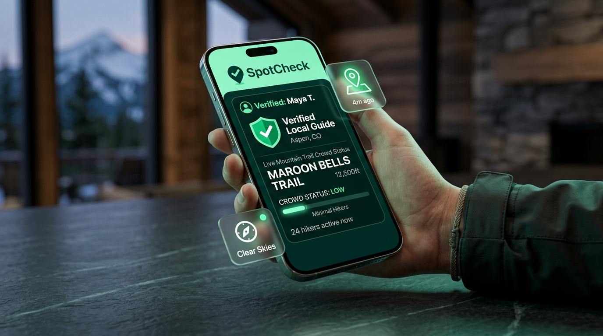
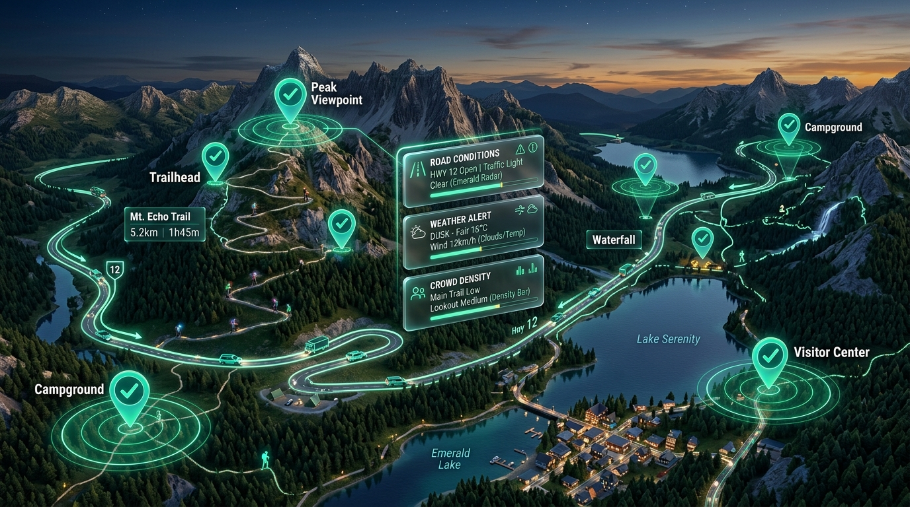

Real-time local intel
Ask the road before
the road answers back.
SpotCheck puts a verified local — physically standing at the spot — between you and the guesswork. Road, weather, crowds, safety: answered live, backed by a photo, not a three-month-old review.
- 15 km
- verification radius
- < 5 min
- typical reply time
- GPS
- checked, every answer

What the app does
Six things SpotCheck gives you that a search engine can't
-
01
Ask a spot-specific question
Drop a pin on any location and ask about road conditions, weather, crowd levels, or safety — right now, not last season.
-
02
Answers only from people actually there
Every reply is checked against the responder's GPS position. If they're outside the 15km radius, the app won't accept it.
-
03
Photo and video proof, not just text
Locals attach a live photo or short clip, so you can see the actual road bend, parking lot, or cloud cover for yourself.
-
04
You confirm it, they get credit
Once you arrive and the answer checks out, you mark it correct — the local earns points and moves up in standing.
-
05
Live weather, built in
Every spot page carries current temperature, wind, and conditions alongside what locals are reporting, no second app required.
-
06
Works with no signal, syncs when you're back
Post photos and road alerts in a dead zone and SpotCheck stamps them with your exact location and time on the spot. The moment you're back on 4G/5G or Wi-Fi, they upload automatically with that original timestamp intact.
One network, every trip
A map that updates as fast as the weather does
SpotCheck turns every trailhead, pass, and viewpoint into a live status board. When a road clears or a lookout gets crowded, the people already there mark it — so the next traveler in doesn't have to guess.
- Every answer is tied to a real GPS position, not typed in from home
- Photo proof means claims age out fast and stay honest
- Coverage grows with every trip locals take through their own region

Three steps
How SpotCheck works
-
1
Pin a spot and ask
Choose the location and the kind of intel you need — road, weather, crowd, or safety.
-
2
A local answers
Only people within 15km of the pin get the question, and they reply with a status and a photo.
-
3
You confirm on arrival
Mark the answer correct once you've seen it for yourself — that's what moves the local up in rank.
Local recognition
Locals build standing the more they help
Confirmed answers earn points. Points move a local up through four tiers, and higher tiers get their answers shown first.
- 🥉BronzeStarting out
- 🥈Silver150+ points
- 🥇Gold400+ points
- 🏆Local Expert800+ points
Questions
Frequently asked
Every answer is checked against the responder's GPS position at the moment they post. If they're outside the 15km radius of the question, the app won't accept the reply. Travelers then confirm on arrival before points are finalized.
Yes. Near home, you answer questions and earn points as a local. Away from home, you're a traveler asking locals at your destination.
Points move you through Bronze, Silver, Gold, and Local Expert. Higher tiers carry a visible badge and their answers are shown first to travelers asking in that area.
SpotCheck is available for both Android and iOS. Grab it from the download section below.
Yes. In an offline dead zone — a high-altitude pass or dense forest trail — you can still take photos and post status updates. SpotCheck saves the exact GPS coordinates and time on your device, then syncs everything to the community map the moment your phone reconnects, with the original location and timestamp intact.
Know before you go.
Download SpotCheck and get your first answer from a verified local in minutes.